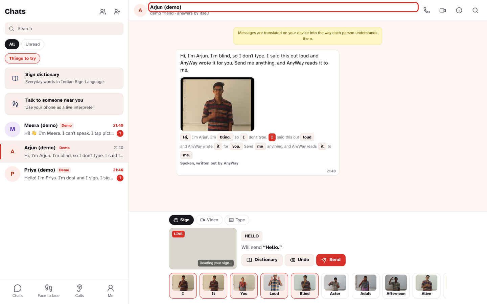
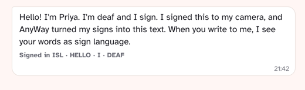
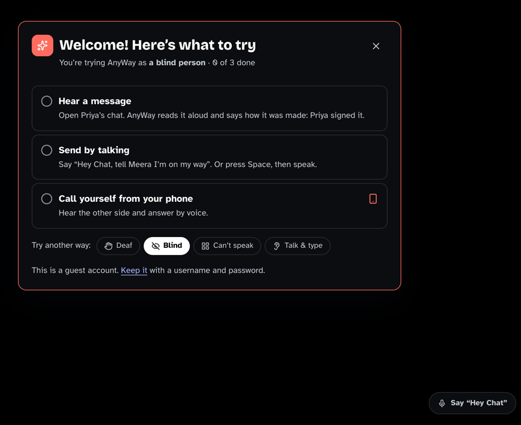
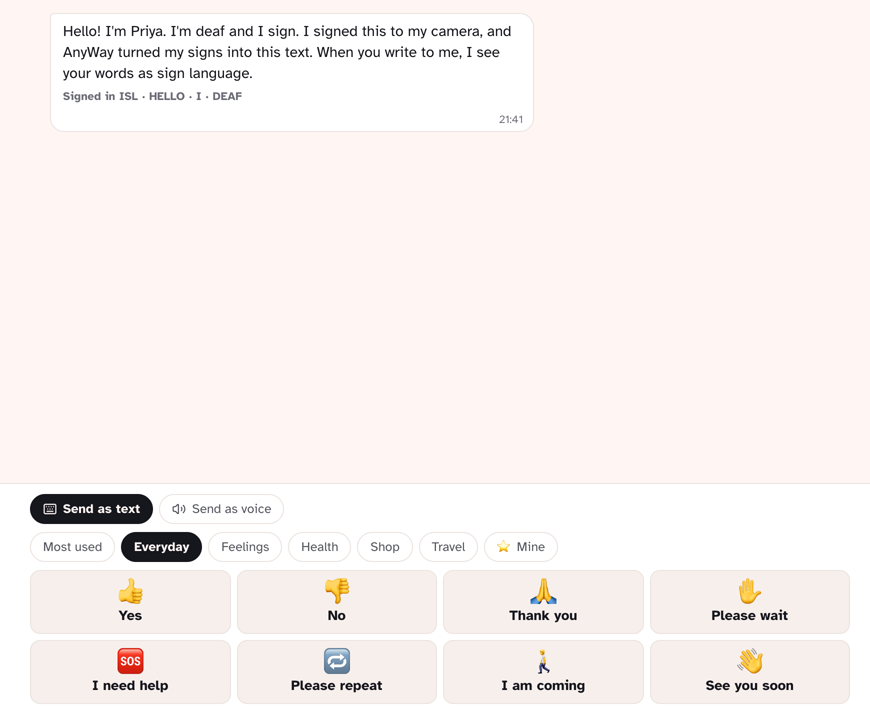
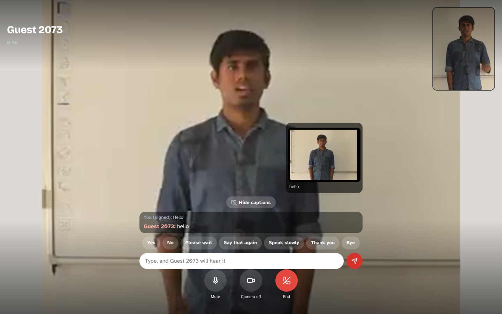
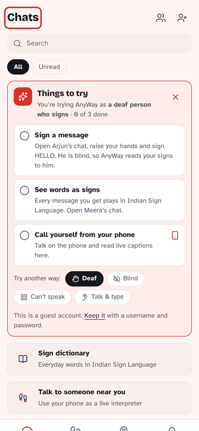
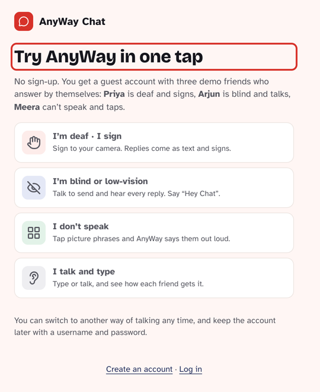

Nexconn Build Challenge 2026 · Humanitarian & Social Good
AnyWay Chat is one chat app where people who are deaf, blind or can’t speak, and older people losing their sight or hearing, talk with anyone, each in their own way.
You sign, speak, tap a picture or type. The other person gets it the way they understand it: as text, a voice or sign language, in their own language. In chats, voice calls, video calls and face to face.

Why we built it
School, work, family and health care now happen in chats and calls. Every popular chat app is built for people who can see the screen, hear the call, speak into the microphone and type quickly. Leave out any one of those, and everyday conversations turn into barriers.
These groups overlap, so we never add the numbers together.
Over 25% of people over 60 have disabling hearing loss, and most people with a vision impairment are over 50 (WHO). As India ages, more people struggle to read a chat or hear a call, often without calling it a disability. AnyWay works for them with nothing new to learn.
The solution
You send it your way
They get it their way
The demo friends in the app, and in our video, show it best. Each one talks in their own way, and each one is understood.
Signs Hello, how are you?
to her camera.
Says I’m good, thank you!
out loud.
Taps See you at school today!
on her picture board.

Who it’s for
AnyWay translates between ways of communicating inside one conversation. The other person just chats normally.
| You are | You send by | You receive as |
|---|---|---|
| Deaf | Signing to the camera (Indian Sign Language, read on the device), typing, picking signs, video messages | Text, plus every message played as ISL sign videos; voice notes written out; live captions on calls; screen flashes and vibration |
| Blind | Talking. Hey Chat, tell Priya I’m on my wayworks on every screen | Every message read aloud, with who sent it and how (Priya signed…); photos described |
| Can’t speak | Tapping a picture phrase board (AAC), typing, or sending typed words as a voice message | Text, read aloud if they like; spoken quick replies on calls |
| Older people | Whatever is easiest: talking, tapping or typing | Text up to Huge and high contrast in every mode, messages read aloud, live captions on calls. Nothing new to learn |
| Talk & type | Typing or talking, as in any chat | Messages labelled with how they were made, such as Signed in ISL · HELLO · HOW ARE YOU |
Every message can also be translated into the reader’s language, with the original underneath: English, Hindi, Bengali, Tamil, Telugu, Marathi, Gujarati, Kannada, Malayalam, Punjabi and Urdu.


What you can do


Speech becomes captions and signs for a deaf person. A deaf person can sign on camera, even on a voice call, and it is read aloud. Non-speaking people answer with spoken quick taps. Captions are translated between languages.
Out in the world, one phone between two people interprets both ways, at a pharmacy, bank or shop counter. The other person needs no app.
Read messages, reply, call, switch chats, add contacts and change settings by voice, on every screen.
Direct and group chats, photos, files, voice notes, video messages, replies, edits, delete for everyone, reactions, read ticks, typing, online status, search, block and report.
Messages, voice notes and call captions follow the language you pick, with the original underneath.
“… is calling you” notifications even when the app is closed, a weak-connection warning, vibration patterns and flash alerts.
A guest account with three demo friends, things to try for each way of talking, and a QR code to call yourself from your phone. Keep the account later.
Text size up to Huge, high contrast, light and dark, screen reader labels and focus, and an installable app (PWA).
Built on Nexconn
extra field. So every reader’s app can turn the same message into their own form: signs, speech, text or captions.| Nexconn feature | What AnyWay does with it |
|---|---|
Chat SDK NCEngine initialize, connect | One live connection for each signed-in person |
DirectChannel, GroupChannel | Text, photos, files, HD voice notes and video messages (sendMessage, sendMediaMessage) |
Message extra | How a message was made and the signs used, so each reader gets it their own way |
Custom message anyway:caption | A non-stored message type that carries live call captions, signs and translations between the two screens |
| References, edits, metadata | Replies, edits, delete for everyone (deleteMessageForAll) and reactions |
| Receipts, typing, events | Read ticks, “typing…”, and live online dots (userModule.subscribeEvent) |
| Channel and message queries | Chat list with unread counts, and history |
Call SDK NCCallEngine | One-to-one voice and video calls |
| Platform Chat API (server) | Access tokens, groups, blocklist, and the demo friends’ replies |
Node API on Vercel: accounts, Nexconn tokens, groups, translation. Data in Upstash Redis, encrypted at rest when DATA_KEY is set.
What’s new here
India has very few sign language interpreters. So AnyWay reads signs itself, in the browser, on the person’s own device, with no video uploaded.
Did you sign…?with its top 3 guesses instead of guessing.
DATA_KEY set, everything the server stores is encrypted at rest (AES-256-GCM).For the judges
Hey Chat, read my messages. Can’t speak: tap a picture phrase.

Hey Chatworks best in Chrome and Edge.
AnyWay Chat’s code is MIT licensed. ISL sign videos and training data: the INCLUDE dataset by AI4Bharat (CC BY 4.0); the signer in the screenshots is from INCLUDE. Built with MediaPipe (Apache 2.0), ONNX Runtime Web (MIT), Whisper via Transformers.js (MIT, Apache 2.0), Florence-2 (MIT), Kokoro (Apache 2.0), React and Vite (MIT), and the Nexconn Chat and Call SDKs.
Made in India. Built for everyone.